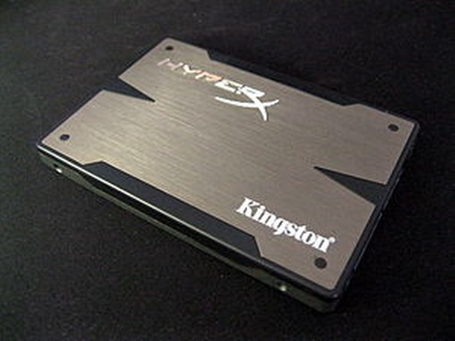

Unidade de Estado Sólido (SSD)
SSD (sigla do inglês Solid-State Drive) ou unidade de estado sólido
é um tipo de dispositivo, sem partes móveis, para armazenamento não
volátil de dados digitais. São, tipicamente, construídos em torno de um circuito integrado semicondutor, responsável pelo armazenamento, diferindo dos sistemas magnéticos (como os HDDs e fitas LTO) ou óticos (discos como CDs e DVDs). Os dispositivos utilizam memória flash (tecnologia semelhante as utilizadas em cartões de memória e pendrives).
Características
Os
dispositivos SSD têm características particulares que trazem vantagens e
desvantagens em relação aos dispositivos de armazenamento
convencionais. Entre elas:
Vantagens
- Tempo de acesso reduzido. O tempo de acesso à memória é muito menor do que o tempo de acesso a meios magnéticos ou ópticos. Outros meios de armazenamento sólidos podem ter características diferentes dependendo do hardware e software utilizado;
- Eliminação de partes móveis eletromecânicas, reduzindo vibrações, tornando-os completamente silenciosos;
- Por não possuírem partes móveis, são muito mais resistentes que os HDDs comuns contra choques físicos, o que é extremamente importante quando falamos em computadores portáteis;
- Menos pesado em relação aos discos rígidos, mesmo os mais portáteis;
- Consumo reduzido de energia;
- Possibilidade de trabalhar em temperaturas maiores que os HDDs comuns - cerca de 70° C;
- Largura de banda muito superior aos demais dispositivos, apresentando até 250 MB/s na gravação [2] e até 700 MB/s nas operações de leitura.
Desvantagens
- Custo mais elevado;
- Capacidade de armazenamento inferior aos discos rígidos IDE e SATA.
As taxas de leitura e escrita, na maioria dos modelos, gira em torno
dos 500 MB/s, aproximadamente 5x a velocidade das taxas de leitura e
escrita num HDD. Em sistemas de alto desempenho, a alta velocidade no
acesso é o mais importante, além de reduzir bastante o tempo de boot,
mas no caso de dispositivos de baixo consumo de energia, ou baixo
custo, o critério da redução do consumo de energia é o mais importante.
Para os padrões atuais de mercados e aplicações, os dispositivos SSD
ainda tem um custo/gigabyte elevado, comparados aos dispositivos
magnéticos. Para resolver este problema, parte das máquinas mais
modernas, hoje em dia, conta com um SSD onde é instalado o sistema
operacional e programas e um HDD onde são gravados os arquivos de uso e
backup. Dessa maneira, os micros podem chegar a ter tempo de boot e
abertura de programa até 5x menor do que nas máquinas onde só se usa HD
magnéticos.
Os maiores SSD disponíveis, atualmente, têm 2TB de capacidade. Em
Portugal encontra-se SSD de 2TB a cerca de 1000 Euros, como é o caso do
Samsung EVO 850 Pro Sata III. Nos Estados Unidos situam-se, geralmente,
entre os 2 e 3 mil dólares. A Toshiba anunciou o lançamento da maior
memória Flash do mercado, com 256 GB de capacidade. A IBM tem um modelo com 4TB. Novas unidades são regularmente apresentadas, mostrando ser uma tecnologia em que estão sendo investidos muitos recursos.
Em Outubro de 2011, a empresa OCZ,
lançou o primeiro SSD de 1TB e 2,5 polegadas. Com este lançamento é
cada vez mais evidente que os HDDs comuns estarão com seus dias
contados.
De fato, a ideia é trocar um disco rígido por memórias de estado sólido de forma natural. O conector, a interface
e as características lógicas são as mesmas. Na verdade uma unidade de
estado sólido pode ter o mesmo tamanho de um disco de 3.5", se encaixado
normalmente no lugar de um disco rígido. Mas ainda estamos longe de
decretar a morte dos discos rígidos. As duas tecnologias ainda vão
coexistir por um longo tempo e provavelmente ganharão novos rivais.
Flash Drives
A maioria dos fabricantes utilizam SSD de memória flash não-volátil para criar dispositivos mais robustos e compactos para o mercado consumidor. Estes SSDs baseados em memória flash, também conhecida como flash drives.
Eles são frequentemente embalados na unidade de disco padrão(1,8
polegadas, 2,5 polegadas e 3,5 polegadas). SSDs são mais rápidos do que
as DRAM e alguns modelos chegam a ser até 6X mais rápidos do que o
tradicional HDDs em arquivos grandes. Flash SSDs não têm partes móveis
e, portanto, procuras e outros atrasos inerentes de discos dvds e Blu-
Ray.
Duração
Estudos comprovam que os SSDs recentemente produzidos possuem vida útil longa, mesmo que seja feito uso contínuo deles (24/7).
Sistemas de arquivos otimizados para SSDs
Alguns
modelos de SSDs possuem otimizações para aumentar suas performances
através da redução de lixo coletado durante as leituras realizadas. Esta
propriedade conhecida como TRIM, a palavra TRIM não é uma abreviação, é
simplesmente o comando que o sistema operacional utiliza para informar a
um SSD que determinado bloco de informação não está em uso e portanto
não precisa ser recuperado durante leituras no setor ao qual ele
pertence.
O sistema operacional Windows 7 dá suporte à TRIM, o MAC OS X
versão 10.6.8 (ou mais recentes) também, no caso do Linux as versões
2.6.33 ou mais recentes também dão suporte à TRIM.
Tecnologias Utilizadas
MLC (Multi Level Cell)
MLC
são empregadas nos dispositivos eletrônicos de uso corrente, como
“pen-drives” e cartões de memória. Já existem no mercado módulos de até
32 GB (esperando-se para breve os primeiros de 64 GB), são mais baratas,
mais compactas (uma única “célula” pode armazenar dois bits através da
variação dos níveis de corrente que conduz em quatro intensidades
identificáveis), mas em contrapartida apresentam um desempenho duas
vezes menor que o das memórias SLC e impõem um limite de 10.000 (dez
mil) operações de escrita por célula.
SLC (Single Level Cell)
SLC
são mais caras, menos densas (cada célula armazena apenas um bit) e os
módulos de maior capacidade hoje existentes armazenam apenas 16 GB
(esperando-se para breve os de 32 GB). Em contrapartida admitem até
100.000 (cem mil) operações de escrita por célula e apresentam um
desempenho muito superior: tempo de leitura de 25 microssegundos, de
escrita de 200 microssegundos e necessitam de apenas 1,5 microssegundo
para apagar o dado armazenado (repare que a unidade é microssegundo, ou
milionésimo de segundos, e não milissegundo, ou milésimo de segundo,
usualmente adotado para medir o desempenho de discos magnéticos). Este
tipo de memória flash tem sido usado até o momento apenas em aplicações
militares, industriais e corporativas.
Preços mais baixos normalmente usam unidades Multi Level Cell (MLC), que é mais lento que uma unidade Single Level Cell (SLC).
Atributo ou Característica | SSD | HDD |  Uma unidade SSD da Marca (Kingston) de 2,5 polegadas (64 mm). |
| Tempo de acesso randômico | Extremamente baixo, cerca de 0.1 a 0.3 ms pois a memória é sólida. | Lento, de 5 a 10 ms, precisa mover o leitor até a trilha que contém as informações que deseja-se ler. | |
| Latência de leitura | Baixa pois a leitura é direta de qualquer local da memória, o que
resulta em menor tempo de boot do sistema e inicialização de
aplicativos. | Alta pois requer o tempo de posicionamento do leitor no local correto. | |
| Desfragmentação | Não traz grandes benefícios pois a leitura de qualquer local da memória é rápida, gasta ciclos de escrita que são limitados. | Requer desfragmentação contínua para ter melhor rendimento, pois a leitura de arquivos fragmentados é muito lenta. | |
| Ruído | Não produz ruído durante o funcionamento. | As partes que se movimentam durante o funcionamento produzem ruído, em alguns modelos este ruído é perceptível. | |
| Fatores Externos | Não é sensível a choque, altitude, vibração, magnetismo. | Sensível a choque, altitude, vibração e magnetismo (o último pode danificar arquivos). | |
| Custos | O preço por GB de espaço é alto, já o consumo de energia é bastante baixo. | Preço por GB de espaço é baixo, consumo de energia alto. | |
| Capacidade | A grande maioria dos SSDs comercializados são de 60 GB a 1 TB ; existem exemplares com 3 TB de espaço ou mais mas são extremamente caros. | Capacidade alta é comum, exemplares com 4 TB são comercializados a preços acessíveis. | |
| Longevidade | Apesar de serem menos suscetíveis a falhas, os SSDs possuem limitação de
ciclos de escrita (em geral de 1 a 5 milhões de ciclos dependendo da
tecnologia). | São mais suscetíveis a defeitos mecânicos pois possuem partes móveis, no
entanto não possuem limites de escrita, pois o funcionamento de
gravação baseia-se em propriedades magnéticas. |